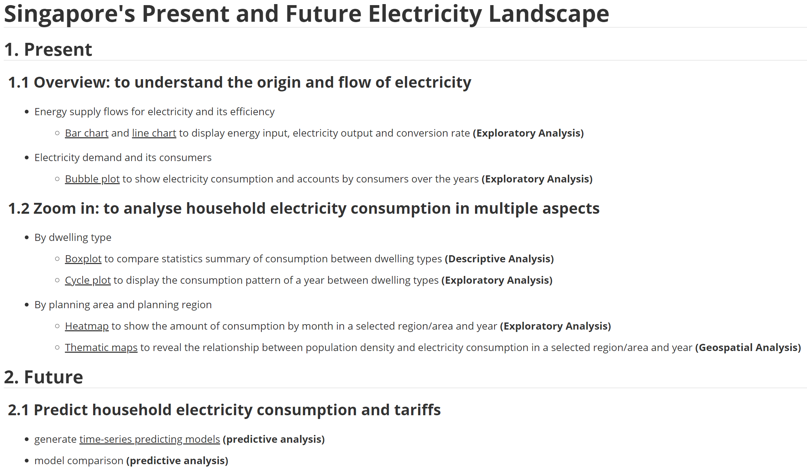
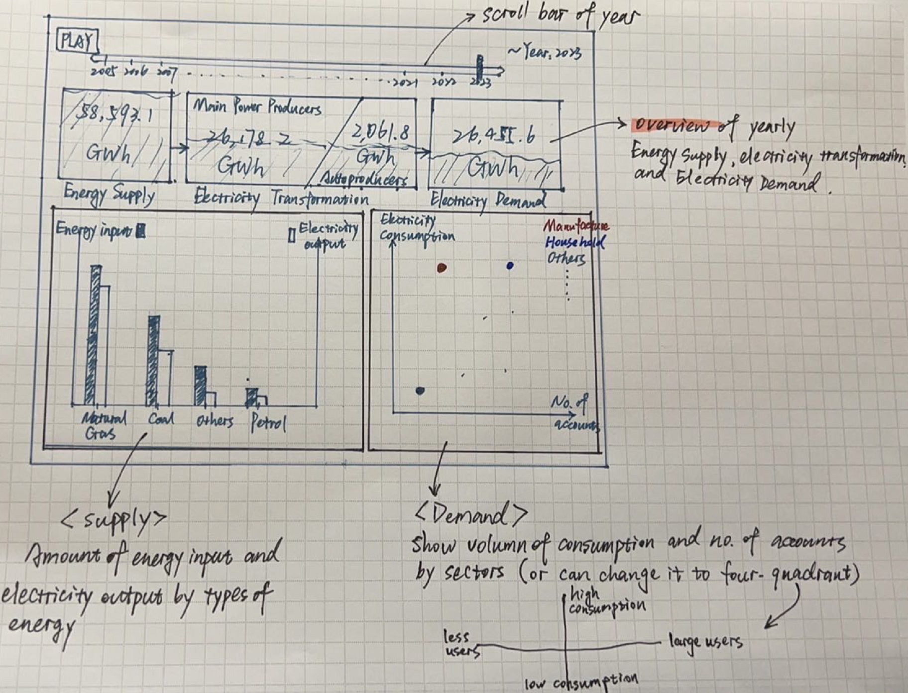
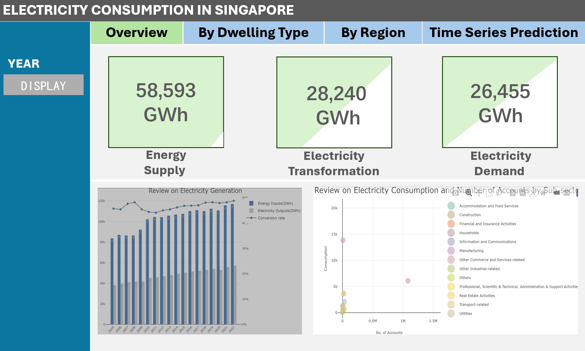
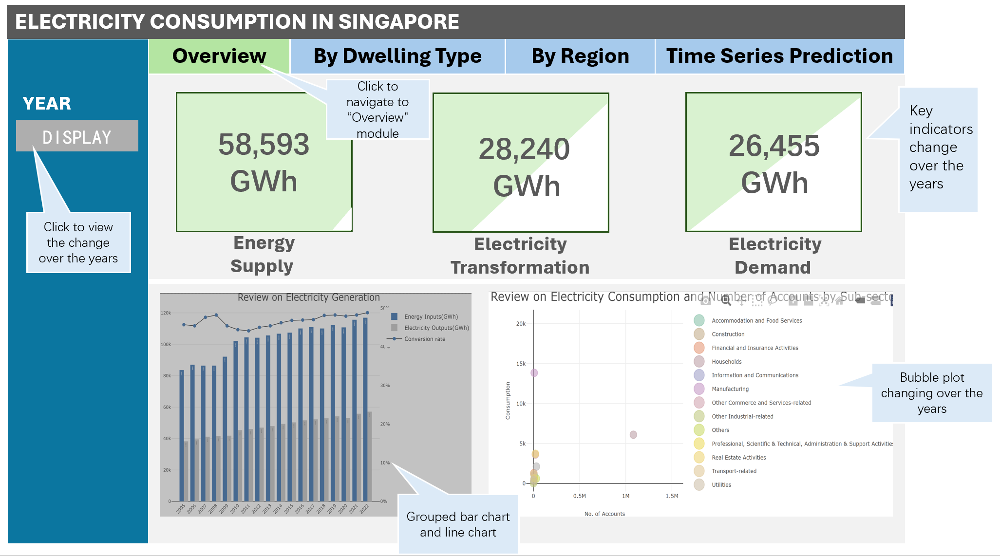
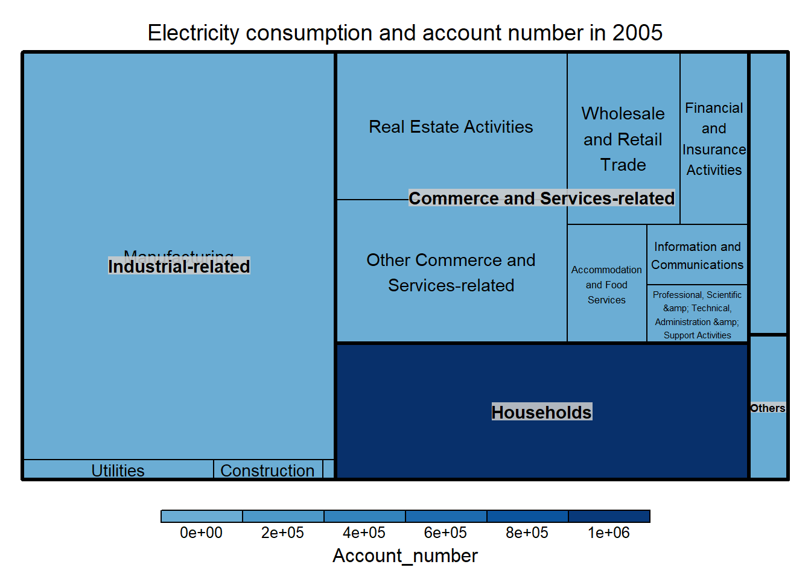

pacman::p_load(readxl, ggdist, ggridges, tidyverse,
ggthemes,colorspace,ggiraph, plotly,
DT)Take-Home Exercise 4: Prototyping Modules for Visual Analytics Shiny Application Project
1. Task
In this take-home exercise, I’m required to select one of the module of our proposed Shiny application project and complete the following tasks:
- To evaluate and determine the necessary R packages needed for your Shiny application are supported in R CRAN,
- To prepare and test the specific R codes can be run and returned the correct output as expected,
- To determine the parameters and outputs that will be exposed on the Shiny applications, and
- To select the appropriate Shiny UI components for exposing the parameters determine above.
2. Intro to Project
First of all, I’ll show the whole picture or framework of our project.
The topic of our project is about Singapore’s present and future electricity landscape. We’ll separate it into several modules from displaying and analyzing current status to predicting future consumption. The bullet points, analytical methods and visualization tools for each module are listed as below:

Within the whole framework, I’ll choose the first module (Chapter 1.1) as the task in this take-home exercise.
3. Data Preparation
3.1 Install and load R packages
In this take-home exercise, I’ll use several R packages shown as below.
3.2 Import data
I’ll import all data downloaded from website.
conversion <- read_xlsx("data/Elec_Supply_Demand.xlsx","conversion")
subsec_consumption <- read_xlsx("data/Elec_Supply_Demand.xlsx","subsector_consumption")
subsec_account <- read_xlsx("data/Elec_Supply_Demand.xlsx","subsector_account")- conversion table: shows the amount of energy supplied to generate electricity and amount of electricity generated by energy from 2005 to June 2023,
- subsec_consumption table: shows the amount of electricity consumption by sub sectors from 2005 to June 2023 and
- subsec_account table: shows the number of electricity accounts owned by sub sectors.
3.3 Data Wrangling
3.3.1 Data Wrangling on conversion table
1. Take a look at the data
glimpse(conversion)Rows: 190
Columns: 4
$ year <dbl> 2005, 2005, 2005, 2005, 2005, 2005, 2005, 2005, 2005, …
$ energy_flow <chr> "Energy Inputs into Main Power Producers", "Energy Inp…
$ energy_products <chr> "Petroleum Products", "Natural Gas", "Coal and Peat", …
$ value_ktoe <dbl> 2445.600, 4744.620, 0.000, 0.000, 0.000, 3285.701, 0.0…It’s made up of 4 variables: - year: from 2005 to Jun 2023, - energy_flow: includes two direction of flow, one is energy inputs into power producers, the other is electricity generated by energy, - energy_products: indicates the type of energy used to produce electricity, - value_ktoe: amount in ktoe unit.
2. Data Wrangling
- Remove sub-total and total lines
Noted that the data downloaded on website is transformed from a tabular format, there are some rows representing sub-total or total information which should be removed.
- Divide energy_flow column into two columns(Inputs and Outputs) with corresponding values
In our project, we want to display a whole picture of the supply and demand of electricity by showing the energy inputs, electricity outputs and the conversion rate separately for each year. So it is a need to tell the inputs and outputs apart from energy_flow column, and convert it into wide format so that each of it will become an individual column and have its corresponding values of each year listed in the column.
- Transfer ktoe into GWh
GWh is the more frequent used unit to describe electricity. I’ll transfer the values in ktoe into Gwh (1ktoe=11.63GWh)
- Calculate conversion rate
Besides showing the inputs and outputs, it will be clearer to exam the performance of generation by showing the conversion rate.
- Remove data for the year 2023
The data for 2023 is as at Jun 2023. It is inconsistent to take the half year data into comparison while others are the whole year data. So the data for 2023 should be removed.
The code of data wrangling is shown as below:
# Remove sub-total and total lines
conversion <- conversion %>%
filter(energy_products !=
"Others (Of which: Biomass excluding Municipal Waste)")
# Remove irrelevant columns
conversion <- select(conversion, -energy_products)
# Divide energy_flow into two columns
conversion <- conversion %>%
mutate(energy_flow = case_when(
str_detect(energy_flow, "Inputs") ~ "Inputs",
str_detect(energy_flow, "Gross") ~ "Outputs",
TRUE ~ energy_flow
)) %>%
pivot_wider(
names_from = energy_flow,
values_from = value_ktoe,
values_fn = sum
)
# Transfer ktoe into GWh and calculate conversion rate
conversion <- conversion %>%
mutate(
Inputs=round(Inputs*11.63,0),
Outputs=round(Outputs*11.63,0),
Conversion_rate=round(Outputs/Inputs,3)
)
# Remove data for 2023
conversion <- conversion %>%
filter(year != 2023)After data wrangling, the variables in conversion table are:
- year: from 2005 to 2022,
- Inputs: the amount of energy used to generate electricity (GWh),
- Outputs: the amount of electricity generated by energy (GWh) and
- Conversion_rate: conversion rate for each year.
3.3.2 Data Wrangling on subsec_consumption table
1. Take a look at the data
glimpse(subsec_consumption)Rows: 323
Columns: 4
$ year <dbl> 2005, 2005, 2005, 2005, 2005, 2005, 2005, 2005, 2005, …
$ sector <chr> "Commerce and Services-related", "Commerce and Service…
$ sub_sector <chr> "Accommodation and Food Services", "Commerce and Servi…
$ consumption_GWh <dbl> 1031.3, 13075.6, 1291.9, 667.2, 3612.7, 650.2, 3712.4,…It’s made up of 4 variables: - year: from 2005 to Jun 2023, - sector: main sectors, - sub_sector: main sub sectors under each sector, - consumption_GWh: amount of consumption of each sub sector in GWh unit.
2. Data Wrangling
- Remove sub-total and total lines
Same as above.
- Remove data for the year 2023
Same as above.
The code of data wrangling is shown as below:
# Remove sub-total and total lines
subsec_consumption <- subsec_consumption %>%
filter(!sub_sector %in% c(
"Commerce and Services-related",
"Industrial-related",
"Overall"))
# Remove data for 2023
subsec_consumption <- subsec_consumption %>%
filter(year != 2023)3.3.3 Data Wrangling on subsec_account table
1. Take a look at the data
glimpse(subsec_account)Rows: 323
Columns: 4
$ year <dbl> 2005, 2005, 2005, 2005, 2005, 2005, 200…
$ sector <chr> "Commerce and Services-related", "Comme…
$ sub_sector <chr> "Accommodation and Food Services", "Com…
$ Number_of_Electricity_Accounts <dbl> 7700, 100770, 3860, 8590, 20260, 8380, …It’s made up of 4 variables: - year: from 2005 to Jun 2023, - sector: main sectors, - sub_sector: main sub sectors under each sector, - Number_of_Electricity_Accounts: number of electricity accounts owned by each sub sector.
2. Data Wrangling
- Remove sub-total and total lines
Same as above.
- Remove data for the year 2023
Same as above.
- Combine two tables
In our project, we want to put the consumption and number of accounts together to cross-review the consumption status.
The code of data wrangling is shown as below:
# Remove sub-total and total line, data for 2023
subsec_account <- subsec_account %>%
filter(!sub_sector %in% c(
"Commerce and Services-related",
"Industrial-related",
"Overall")) %>%
filter(year != 2023)
# Combine two tables
consump_account <- subsec_consumption %>%
left_join(subsec_account, by = c("year", "sub_sector"))
# Rename columns
consump_account <- consump_account %>%
select(-sector.y) %>%
rename("sector"="sector.x") %>%
rename("Account_number"="Number_of_Electricity_Accounts",
"consumption"="consumption_GWh")4. Visualization
4.1 Visualization on Electricity Generation
- Visualization methods
I choose grouped bar chart to display the absolute amount of energy input and electricity output together and line chart to show the conversion rate for each year. In this way, readers can get to know not only the amount of input and output but also the performance of electricity generation of each year.
- X-axis and Y-axis
The x-axis represents the years, the left y-axis represents the amount of inputs and outputs in GWh, and the right y-axis represents the conversion rate.
- Scale
The input amount is around 80,000-120,000 GWh, the output amount is around 30,000-60,000 GWh, while the conversion rate is around 40%-50%. To better display both charts without disturbing each other, I set the scale of left y-axis (amount of input and output) to be from 0-120,000 GWh, and the scale of right y-axis (conversion rate) to be from 0%-50%.
- Interactivity
I create interactive visualization by showing the detail text when hovering the mouse pointer on each bar and point on the line.
The code is shown as below:
conversion <- conversion %>%
mutate(Fyear=factor(year))
# Plot 1
p1 <- conversion %>%
plot_ly(x=~Fyear,
y=~Inputs,
text =~Inputs,
textposition = 'auto',
type = "bar",
name="Energy Inputs(GWh)",
marker=list(color='rgb(49,130,189)')) %>%
add_trace(y=~Outputs,
text =~Outputs,
textposition = 'auto',
name="Electricity Outputs(GWh)",
marker=list(color='rgb(204,204,204)')) %>%
add_trace(y=~Conversion_rate,
yaxis='y2',
type="scatter",
mode="lines+markers",
name="Conversion rate",
line = list(color = 'rgba(67,67,67,1)',
width = 1)) %>%
layout(barmode = "group",
title = "Review on Electricity Generation",
xaxis = list(title = "",tickangle=-45, tickfont=list(size=8)),
yaxis = list(title="", tickfont=list(size=8)),
yaxis2 = list(title="",
tickfont=list(size=8),
overlaying="y",
side="right",
range = c(0, 0.5),
tickformat = ".0%",
showgrid = FALSE),
legend=list(font=list(size=10)))
p14.2 Visualization on Electricity Consumption
- Visualization methods
I choose bubble plot to display the cross-review on electricity consumption and number of electricity accounts by each sub sector.
- X-axis and Y-axis
The x-axis represents the number of electricity accounts, the y-axis represents the amount of electricity consumption. Points will be coloured in terms of sub sector.
- Interactivity
I create interactive visualization by showing the movement over the years.
The code is shown as below:
# plot 2:
bp <- consump_account %>%
plot_ly(x=~Account_number,
y=~consumption,
size=2,
color=~sub_sector,
frame=~year,
text=~paste(sub_sector, "<br>No. of Accounts:", Account_number,"<br>Consumption:",consumption),
hoverinfo="text",
type="scatter",
mode="markers",
alpha = 0.8) %>%
layout(showlegend=TRUE,
hovermode="closest",
legend = list(font = list(size = 8)),
title="Review on Electricity Consumption and Number of Accounts by Sub-sector",
xaxis=list(title="No. of Accounts",
titlefont = list(size = 8),
tickfont = list(size = 8)),
yaxis=list(title="Consumption",
titlefont = list(size = 8),
tickfont = list(size = 8)))
bp5. UI Design
5.1 Draft storyboard
The draft storyboard is shown as below:

5.2 UI Design
The UI design is shown as below:


6. Revise take-home exercise 4
6.1 Electricity Consumption and account number
6.1.1 Plot
# 1. Modify the file filtered by "year"
consump_account_filtered <- consump_account %>%
mutate(across(where(is.character), ~ gsub("&", "&", .))) %>%
filter(year== 2005)
# 2. Install packages
pacman::p_load(treemap, treemapify,
tidyverse,d3treeR,
devtools,RColorBrewer)
# 3. Plot
selected_year <- 2005
color_palette <- colorRampPalette(brewer.pal(12, "Blues"))(20)
tm <- treemap(consump_account_filtered,
index=c("sector", "sub_sector"),
vSize="consumption",
vColor="Account_number",
type="value",
palette = color_palette,
title=paste0("Electricity consumption and account number in ",selected_year),
title.legend = "Account_number"
)
d3tree(tm,rootname = "Industry")

6.1.2 UI Design
- Select year